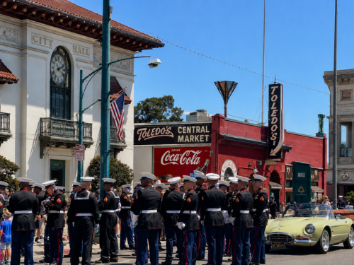

The people's archive
Memories worth keeping.
Before the bulldozers came in 1964, Santa Clara had a downtown you could walk to, meet in, and remember. This is where we gather what's left of it — photographs, film, voices, and clippings — and add the stories being made today.
A living collection
Told in every format we can find.
A city's memory doesn't live in one place, and it doesn't fit one shape. So this page holds all of it — a faded photograph, a home movie, a grandparent's recording, a headline from the archives. Every piece is a reminder of what a real downtown felt like, and why citizens and voters across the Bay Area are working to bring it home.
The archive

The archive is being assembled.
The first photographs, films, recordings, and clippings are on their way in. Check back soon — or help fill these shelves with a memory of your own.
Contribute a memory →Have a memory of the old downtown?
A photo in a shoebox, a home movie, a story a grandparent told — every piece helps the whole city remember what it's fighting for. Send us what you have and we'll help preserve it here, credited to you.
The next memory is up to us
Help us make it worth remembering.
The blueprint is approved. What gets built — and how the story ends — depends on how many citizens and voters keep showing up.